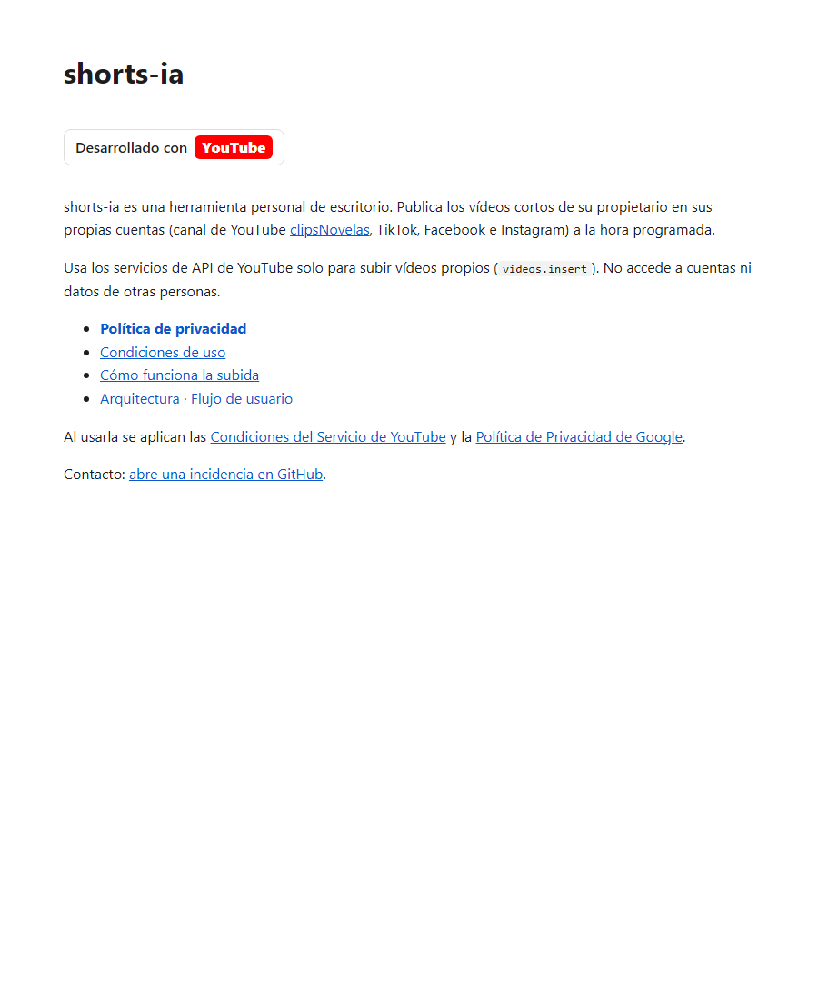
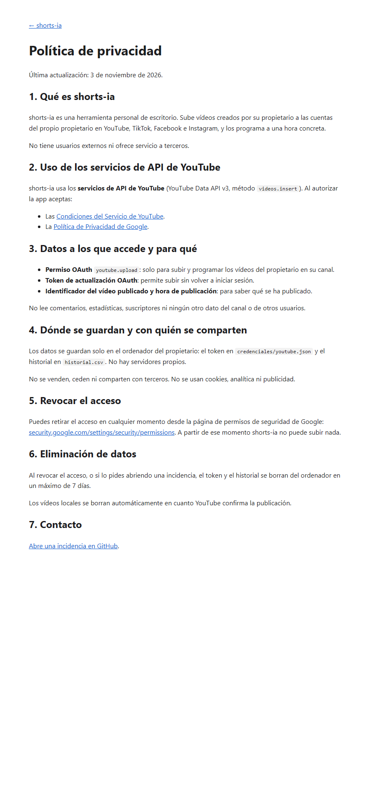
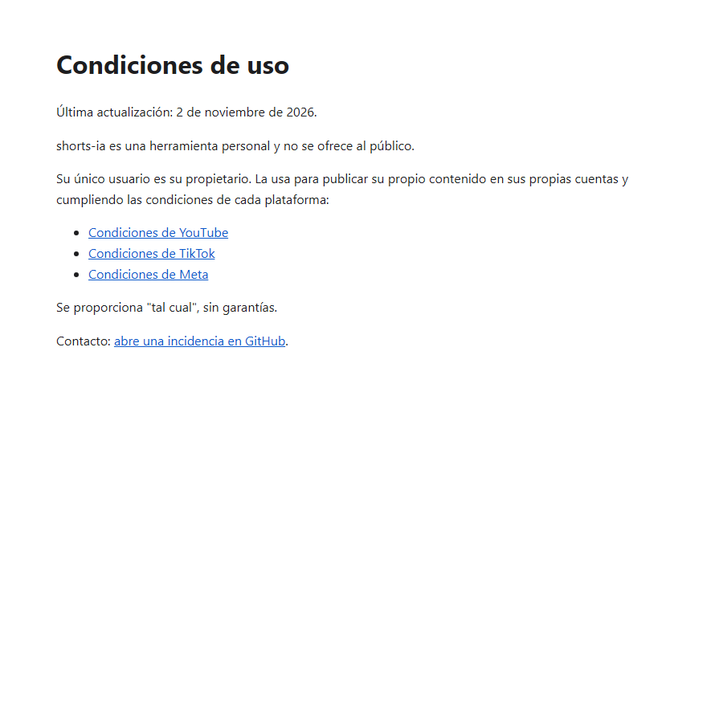
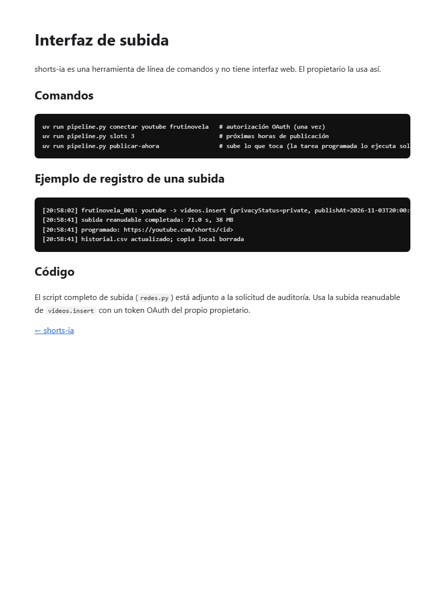

Proyecto de Google Cloud 860669100677 (shorts-ia-513521). Canal: clipsNovelas (UCcdmXvex99E-Qj5gb4pYa9A). Web: https://alvaro-tena.github.io/shorts-ia-legal/
Enlace visible a la Política de Privacidad, mención "Desarrollado con YouTube" y enlaces a las Condiciones de YouTube y a la Política de Privacidad de Google.

Incluye: uso de los servicios de API de YouTube (sección 2), enlace a la Política de Privacidad de Google y a las Condiciones de YouTube, datos accedidos (sección 3), almacenamiento local y no compartición (sección 4), revocación en security.google.com/settings/security/permissions (sección 5) y eliminación de datos en un máximo de 7 días (sección 6).


https://www.googleapis.com/auth/youtube.upload (cliente OAuth de escritorio, PKCE, redirección a 127.0.0.1).Detalle paso a paso en el diagrama de flujo de usuario adjunto.
Herramienta de línea de comandos, sin interfaz web. El script completo de subida (redes.py) va adjunto en "Otros materiales de apoyo".
